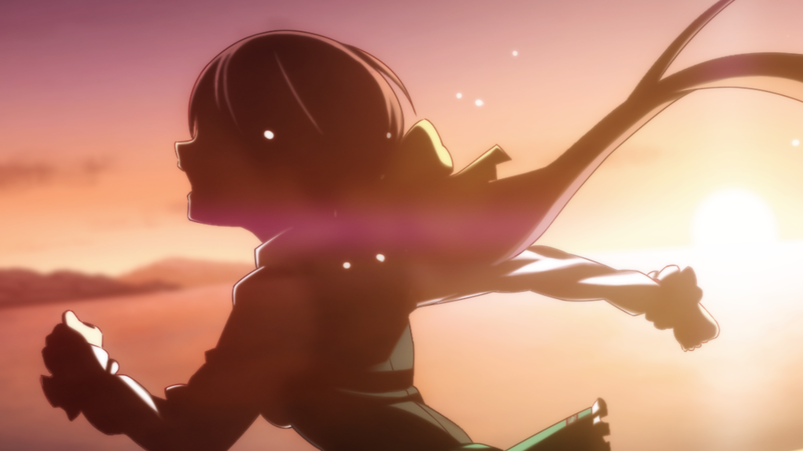

There was nothing romantic about it. That's just how reality goes.
But this love I never wished for, so far from these ideals, had fallen into my lap. Regardless of my will, it had become completely irreplacable to me.
These feelings were surely a gift of some sort.
All the more reason I couldn't do as I pleased with them. I couldn't contain these feelings of love for Shunsuke.
Kayo
"Shunsuke... Don't go...!
I couldn't stop myself from feeling that way. I bit my lip and turned those welling feelings into strength.